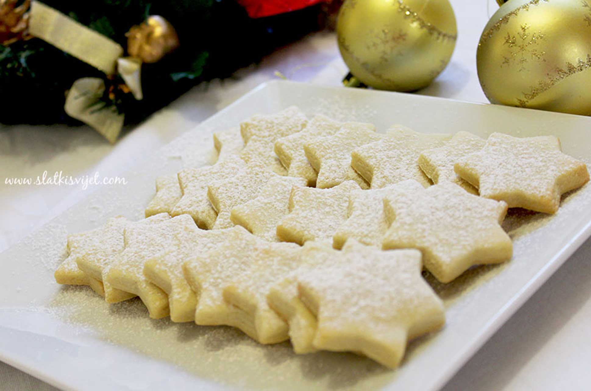
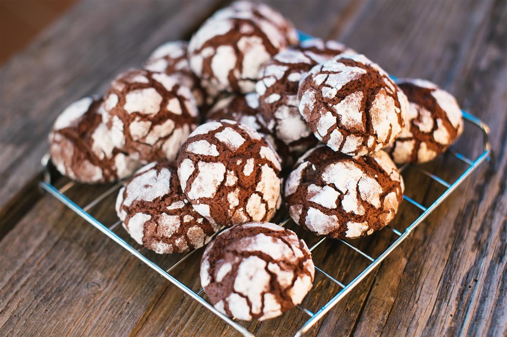
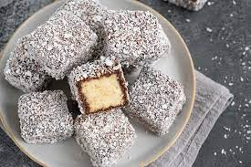
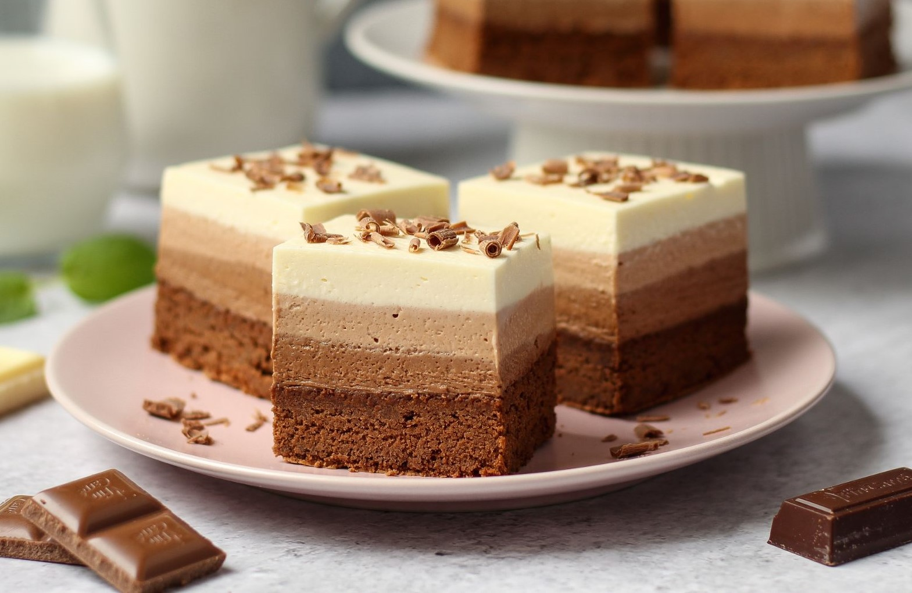

Od navedenih sastojaka zamjesiti glatko tijesto, zamotati u foliju i ostaviti 1/2 sata u frižider. Tijesto ponovo malo premjesiti i oblikovati tanji valjak. Sjeći šnitice i formirati male kuglice, malo veće od lješnjaka.Kuglice redati u pleh obložen pek-papirom i vilicom stisnuti svaku da ostane šara. Praviti razmak između kuglica jer će prilikom pečenja narasti. Peći na 180*C u predhodno zagrijanoj pećnici od 5-8 min. Keksići treba da ostanu bijeli.
U većoj posudi pomiješati brašno sa solju. Rastopiti čokoladu s maslacem na pari. Istući jaja sa šećerom i rumom dok smjesa ne posvijetli i šećer se rastopi. Umiješati rastopljenu čokoladu u smjesu s jajima. Ručno umiješati dio po dio brašna dok se sve ne poveže. Uliti smjesu u posudu, prekriti je folijom i ostaviti u hladnjaku najmanje 4 sata. Smjesa mora biti jako tvrda. Zagrijati pećnicu na 170°. Izvaditi smjesu iz hladnjaka i žličicom grabiti male kuglice smjese (promjera 2,5 cm). Oblikovati kuglice rukama, uvaljati ih u šećer u prahu i slagati ih s dosta razmaka na pleh s papirom za pečenje. Peći na sredini pećnice 10-ak minuta.
Izmiksati sastojke za biskvit te ispeći biskvit. Peče se na 120 stupnjeva otprilike 30min. Ohlađeni biskvit nasjeći na kockice i umeljati u čokoladni preljev.
Zajedno otopiti maslac i čokoladu, pa malo ohladiti. Zajedno umješati sve sastojke Smjesu rasporediti u kalup dimenzije 30x20 cm obložen papirom za pečenje i peći na 180 °C, 20–25 minuta.
